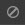
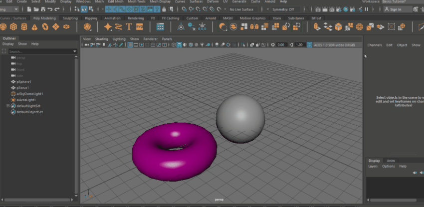

您可以禁用灯光，使其不会影响场景。切换  可启用或禁用灯光，或者选择灯光并在“特性编辑器”(Property Editor)中切换其“启用”(Enable)属性。
在“灯光编辑器”(Light Editor)中，禁用的灯光会显示带对角线图案。
禁用灯光组可同时禁用其所有成员灯光。请参见在灯光编辑器中创建和分组灯光。
如果已使用渲染设定系统将场景划分为不同的层，则可以通过在“启用”(Enable)属性上创建覆盖，来禁用单个层的灯光。请参见 Maya 渲染设置或在渲染层中创建灯光覆盖。
打开“灯光编辑器”(Light Editor)会在该编辑器与场景中灯光形状节点上的“可见性”(Visibility)属性之间创建连接。通过此连接，您可以使用“灯光编辑器”(Light Editor)的“启用”(Enable)和“隔离”(Isolate)属性控制灯光的可见性；但是，“属性编辑器”(Attribute Editor)中的“可见性”(Visibility)开关也变得不可用。若要启用或禁用灯光，请改为使用“灯光编辑器”(Light Editor)。